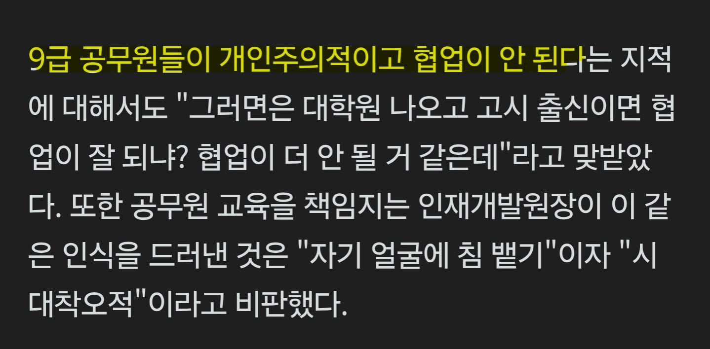

근데 고졸수준 시험이라는데 긁힐거까지 있나.. 수능도 고졸수준 시험인데
비하하는 단어로 썼으니 논란이 되는거지
댓글이 개드립 수준이네
어느집단을 내려치기하는 정도의 지성을 가진 사람은 보통 지성을 가졌다고 하기 애매한 경우가 많다
어쩔 수 없음
생각을 하고 말해야하는데
생각을 안하고 말하는 지능을 가진 사람인걸 어떡하냐
그냥 뇌는 엿바꿔먹었다고 보면 됨
내 가봤을때 9급 시험 컨텐츠 함 가야할듯 그분
고졸 수준 시험은 맞지 일부러 그렇게 만들어 놨는데 그런데 그거랑 협업이랑 뭔 상관이냐 업무 프로세스는 윗 대가리가 만드는거 아니냐? 저런 인간들 협업은 업무 협업이 아님 지들 시다바리고 그거 안해준다고 ㅈㄹ 하는거임
ㄹㅇㅋㅋ 고졸도 그 자리에 수많은 사람듣는데서 그런말 하면 안되는건 안다ㅋㅋ
학사따리 수준으로 수준을 논하는 것 자체가 수준 미달임.
대학을 모두가 원하니 능력 있으면 당연히 갔을 것이라는 논리구조로 시작하는 망상인데
그것부터가 논리적으로 순환오류에 빠지는 일이고
사실 대학 학사레벨로 기대하는건 수준이나 능력이 아니라 최저점 보장인데
전혀 보장되지 않는다는 것이 계속 드러남.
저점을 떠나 사실상 의미없는 돈 많이 드는 물자격증 수준이라
그냥 생각없는 어중이 떠중이레벨이니 지적 능력은 물론이고 행동력과 멘탈도 의심됨.
넓게 봐도 상위 20%만 의미있다고 봐야할듯.
고졸에 대한 인식은 능력좋고 다방면에 훌륭한 친구도 많지만 진짜 말 안되는 개차반들도 많아서 최저점 보장할 길이 없다는 점때문에 그런건데 이런 식이면 사실 평가도구 새로 만들어서 매번 새로 하는게 답일 수 있음.
인간이란게 대부분 자기 일만 할줄알지 사회나 타인에 대해서는 따로 배운 적이 없어서 저능한 이해도를 갖기 때문에
젊은 신규들이 개인적이고 협업 안된건 사실일 수 있겠지만 그 현상들의 원인을 자기가 몇개 꽂힌 요소들 탓밖에 할줄 모름
뭐때문에 문제가 일어났는지 모르니까
쟤는 학벌이 문제다 출신지역이 문제다 등등
대부분의 인간이 하는 짓인데 거기에 자신의 직무와 발언장소를 가리지 못해서 벌어진 일
하급간부 내려치기 때문에 ㅈ되고 있긴함
원래 고졸수준을 뽑던게 9급 공무원인데
대졸자 충분히 실력있는 사람들이 주가 된지 한참됐지
저 발언한 사람은 걍 지 들어갈때 생각에 멈춰있는 뭣 같은 사람이지
한 단체의 장이, 심지어 인재개발원장이 그런 발언하면 ㅋㅋ